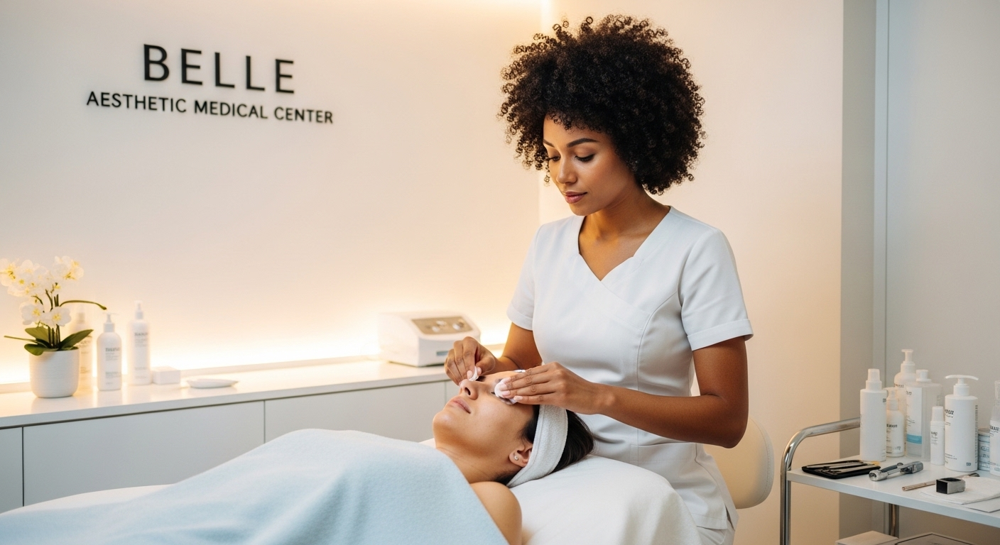

Limpieza Facial: El Ritual Sagrado para una Piel que Respira
El primer paso hacia el amor propio y la salud cutánea

Nuestra piel es el escudo que nos protege del mundo exterior; absorbe la contaminación de la ciudad, el estrés diario, los restos de maquillaje y los cambios climáticos. Una Limpieza Facial profesional no es un simple lujo ocasional, es una necesidad higiénica y el cimiento sobre el cual se construye cualquier rutina de cuidado de la piel.
¿Por qué es vital una limpieza profunda?
A nivel clínico, una limpieza facial va mucho más allá de lo que podemos lograr en casa. Este procedimiento permite realizar una extracción meticulosa de comedones (puntos negros) y miliums, elimina las células muertas que opacan el rostro y descongestiona los poros de manera segura para evitar brotes de acné o inflamaciones.

Además, al retirar esta barrera de impurezas, la piel recupera su capacidad de oxigenación. Esto significa que cualquier producto hidratante o tratamiento antiedad que apliques después penetrará adecuadamente, maximizando sus beneficios. Es devolverle a tu rostro su luminosidad y textura suave natural.
Manos expertas y trato compasivo
Sabemos que la piel del rostro es delicada y vulnerable. Por eso, en nuestro espacio en Medellín, en el sector de El Poblado, realizamos cada limpieza facial con un enfoque de respeto absoluto por la sensibilidad de cada paciente. Utilizamos productos dermatológicos de alta gama y técnicas manuales suaves, porque entendemos que cuidar de tu rostro es cuidar de tu carta de presentación al mundo. Lo hacemos con paciencia, empatía y mucho corazón.